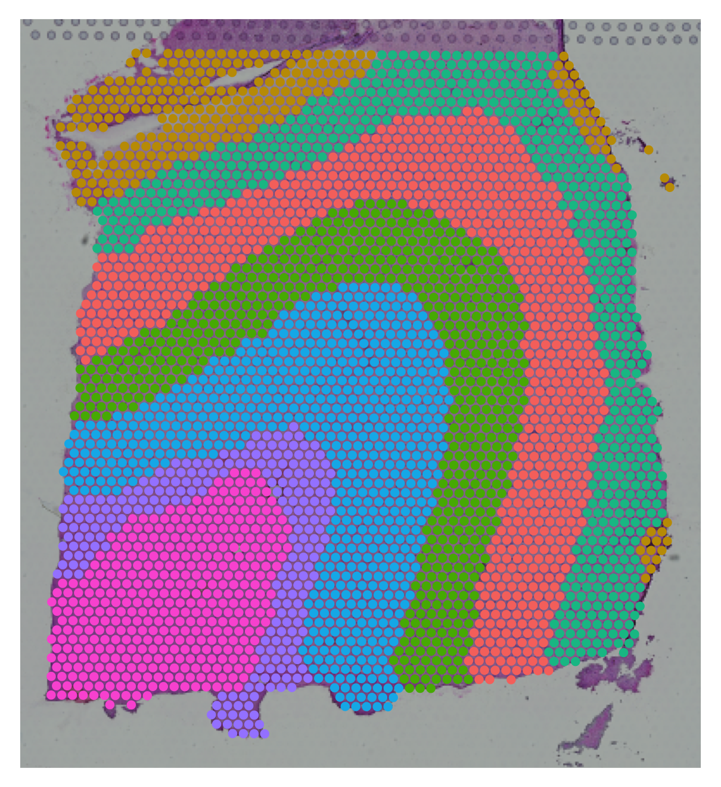

Introduction
This vignette demonstrates how to reproduce the DLPFC results
presented in our article using the DOST package.
To ensure our results match the manuscript exactly, we use the specific version of the DLPFC dataset provided by the Benchmark ST Reproducibility study.
1. Data Preparation
Please follow these steps to prepare the data:
- Go to the Zenodo Repository and download the DLPFC12.zip file.
- Unzip the file.
- Note the path to the parent folder called “DLPFC12”. We will refer
to this as
dir.inputin the code below.
2. Define Helper Functions
We use a custom loader function to parse the specific directory structure of this benchmark dataset and attach the ground truth layer annotations (L1-L6, WM) to the Seurat object.
library(DOST)
library(Seurat)
library(ggplot2)
# Custom loader for the Benchmark ST Reproducibility dataset structure
load_DLPFC_sample <- function(slice.id, dir.input) {
filename <- paste0(slice.id, "_filtered_feature_bc_matrix.h5")
data.dir <- file.path(dir.input, slice.id)
if (!dir.exists(data.dir)) {
stop(paste("Directory not found:", data.dir))
}
sp_data <- Seurat::Load10X_Spatial(data.dir, filename = filename, filter.matrix = FALSE)
# Add the annotations
gt_file <- file.path(data.dir, 'gt', 'tissue_positions_list_GTs.txt')
if (!file.exists(gt_file)) {
stop("Ground truth file missing. Ensure you downloaded the full benchmark zip.")
}
df_meta <- read.table(gt_file, sep = ",", row.names = 1)
common_cells <- colnames(sp_data[["Spatial"]]) %in% rownames(df_meta)
sp_data <- sp_data[, common_cells]
layer.data <- data.frame()
layers <- c('L1', 'L2', 'L3', 'L4', 'L5', 'L6', 'WM')
for (l in layers) {
filename <- paste0(slice.id, "_", l, "_barcodes.txt")
filename <- file.path(data.dir, 'gt', 'layered', filename)
if (!file.exists(filename)) next
data.temp <- read.table(filename)
data.temp <- data.frame(barcode = data.temp[,1], layer = l, row.names = data.temp[,1])
layer.data <- rbind(layer.data, data.temp)
}
sp_data <- SeuratObject::AddMetaData(sp_data, metadata = df_meta['V3'], col.name = 'row')
sp_data <- SeuratObject::AddMetaData(sp_data, metadata = df_meta['V4'], col.name = 'col')
sp_data <- SeuratObject::AddMetaData(sp_data, metadata = layer.data['layer'], col.name = 'layers')
return(sp_data)
}3. Load Data
Now we load sample 151673.
Note: In the code below, replace "path/to/DLPFC12"
with the actual path where you unzipped the data.
# Set this to the folder where you unzipped DLPFC12.zip
# e.g., "~/Downloads/DLPFC12"
dir.input <- "path/to/DLPFC12"
slice_id <- "151673"
# Load the sample using the helper function
sample <- load_DLPFC_sample(slice_id, dir.input)
# Extract inputs for DOST
X <- Seurat::GetAssayData(sample, layer = "counts")
coords <- Seurat::GetTissueCoordinates(sample, scale = 'hires')[1:2]
# Extract the ground truth labels
gt <- sample@meta.data$layers4. Run DOST
We run the DOST algorithm using the recommended settings for 10x Visium data:
- R = 7: The DLPFC structure is known to have layers L1-L6 plus White Matter (WM).
- lambda = 0.03: The recommended regularization weight for Visium.
- refinement = TRUE: Recommended for laminar tissues like the cortex.
results <- DOST(
X = X,
coords = coords,
R = 7,
lambda = 0.03,
refinement = TRUE
)5. Visualization
We can visualize the resulting spatial domains and the UMAP representation of the low dimensional DOST embedding.
# Visualize Spatial Domains
sample@meta.data[["DOST"]] <- results$labels
p1 <- Seurat::SpatialDimPlot(sample, group.by = "DOST", pt.size.factor = 2.5) +
Seurat::NoLegend()
print(p1)
# Visualize UMAP with ground truth labels
p2 <- plot_DOST_umap(
Z = results$Z,
labels = gt
)
print(p2)
6. Validation (ARI)
Since we have the ground truth annotations for this dataset, we can easily calculate the Adjusted Rand Index (ARI) to quantify performance.
ari_score <- mclust::adjustedRandIndex(results$labels, gt)
cat(paste("Adjusted Rand Index (ARI):", round(ari_score, 3)))Adjusted Rand Index (ARI): 0.597
7. Diagnostics
Finally, it is good practice to inspect the optimization history to
ensure the algorithm has converged. The losses element in
the results list tracks the objective function value at each
iteration.
# Create a sequence for iterations starting at 0
iterations <- 0:(length(results$losses) - 1)
# Plot the optimization loss
plot(iterations, results$losses, type = "b", pch = 19, col = "blue",
xlab = "Iteration", ylab = "Loss",
main = "DOST Optimization Convergence")
grid()